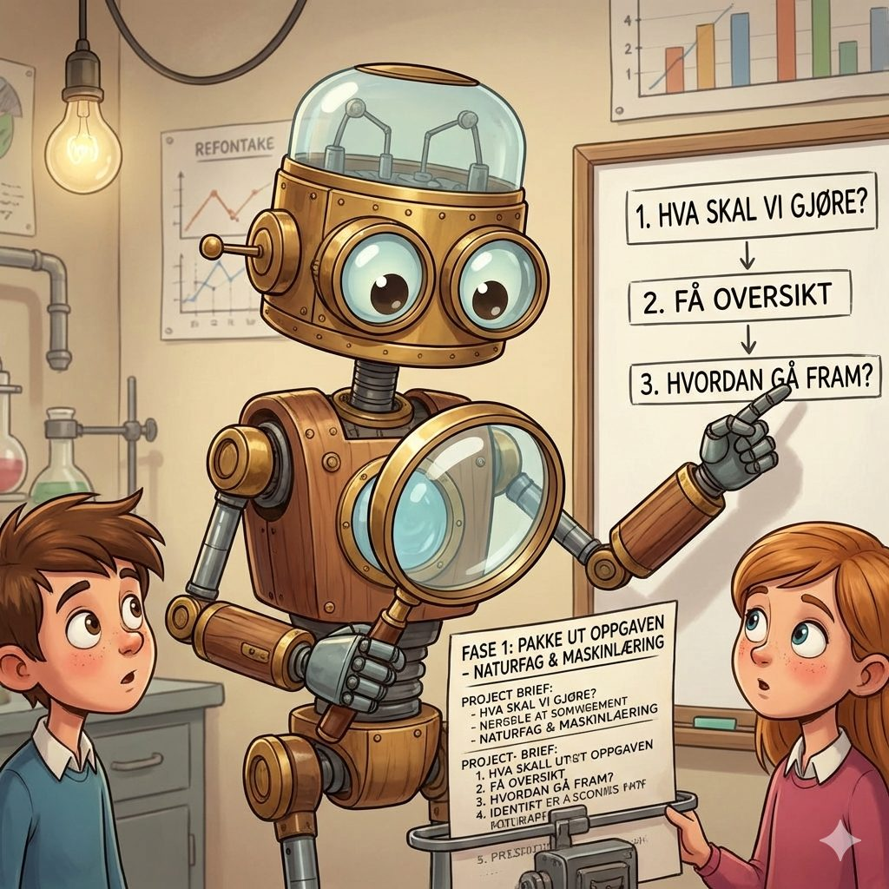

Utgangspunktet
Hva skjer med elevens eget arbeid når KI er i rommet?
KI kan gi elevene et svar på sekunder. Det åpner fagstoffet, og det flytter samtidig arbeid, ansvar og autoritet i klasserommet. Ressursen handler om hva som skjer med elevenes engasjement, eierskap og dømmekraft da, og om hva vi lærere kan se av det.
Dagen startet med to setninger som også egner seg godt til å åpne et møte i faggruppen:
Fullfør setningene
- Jeg vet at elevene er med når …
- Jeg blir usikker på om de er med når de bruker KI fordi …
Den andre setningen henter fram hverdagserfaringene: like besvarelser, perfekt språk, elever som strever med å forklare sin egen tekst. Det er nettopp de bolkene arbeider videre med.
Fire bolker
Ressursen er bygd opp av fire deler
Bolk 1
Engasjement med KI-blikk
Hva ser vi når elevene er «med»?
Engasjement er formbart, og nå former også KI det. Fire sider ved engasjement, sett med KI-blikk: i handling, i følelser, i tankearbeid og i initiativ.
- Fire dimensjoner
- Refleksjonsspørsmål
- Snakk og bytt
- Sitatsortering
Bolk 2
Elevenes stemmer
Hva forteller elevene oss?
Den samme hjelpen fra KI kan være en snarvei for én elev og en vei inn i fagstoffet for en annen. En samtale i par om hvor grensen går, i ditt eget fag.
- Støtte eller erstatning
- Samtale i par
- Samtaleark
Bolk 3
Design for læring
Hvordan designe for engasjement når KI er tilgjengelig?
Læring som transformasjon. Bygg en KI-agent elevene kan lære med, prøv den i elevrollen og juster den etter det dere ser.
- Plass i forløpet
- Bygg agenten
- Prøv i elevrollen
- Juster og del

Bolk 4
Vurdering og tegn på læring
Hva gjør vi med tegnene på læring?
Når KI har vært med, trenger vi flere tegn enn produktet. Tre innganger til elevens kompetanse, og metasamtalen som gjør elevens eget arbeid synlig.
- Tre innganger
- Hva vil du se etter?
- Metasamtalen
- Prosesslogg
Verktøy
Til bruk i eget fag og i faggruppen
Planlegging
Design for læring med KI
Planlegg et læringsforløp i ni steg, med et spørsmål om KI i hvert steg. Planen kan lastes ned som PDF.
Faseagenter
Bygg en faseagent
Tilpass instruksen til ditt fag, lag agenten i Copilot og prøv den ut i fire elevroller.
Prosesslogg
Prosessloggen i Forms
To korte skjemaer: en gruppelogg etter hver økt og et fasenotat for hver elev. Med Word-filer til Hurtigimport.
Refleksjon
Engasjement når KI er med
Se på en situasjon fra egen undervisning gjennom de fire dimensjonene, snakk i par og last ned refleksjonen som PDF.
I rommet
Setningsveggen
To tavler til fagdagen der deltakerne skriver korte svar som dere leser sammen, og tips til å lage din egen.
Prosesslogg
Prosesslogg på nett
En logg i åtte faser som elevene fyller ut i nettleseren, lagrer som fil og laster ned som PDF.
Forskningen bak
Tre år med KI i et podkastprosjekt
Elevgrupper i videregående laget en podkast om bioteknologi for elever på ungdomstrinnet. KI var en obligatorisk ressurs, men elevene hadde selv ansvar for å sjekke fakta. Hvert år endret vi hvordan arbeidet var organisert, fra fri bruk via en strukturert logg til fire faseagenter som spør tilbake og lar elevene selv finne veien videre.
3
sykluser med designbasert forskning, 2024–2026
80
elever i naturfag, og i norsk det siste året
147 000
ord fra logger, samtaler, podkaster og lærerrefleksjoner
Grensen mellom støtte og erstatning ligger i hva støtten gjør for eleven.
Mari-Ann Letnes · NTNU